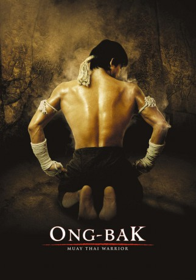

#100 Ong-bak 1
 
 IMDB-Wertung: 7.2 / 10
IMDB-Wertung: 7.2 / 10  Metascore: 69
Metascore: 69 
Don, ein junger Geschäftsmann aus Bangkok, reist in sein kleines abgelegenes thailändisches Heimatdorf Nong Pra-du, um dort ein wertvolles Amulett aus dem Gesicht der dort verehrten Buddha-Statue Ong-Bak für seinen Auftraggeber Komtuan zu kaufen. Nachdem ihm aber der Dorfvorsteher die Reliquie nicht verkaufen will, trennt der Geschäftsmann kurzerhand den Kopf des Heiligtums ab, um nicht mit leeren Händen zu seinem Chef zurückzukehren. Der in der „ältesten Kampfsportart der Welt“, Muay Thai, ausgebildete Ting wird von den Ältesten seines Dorfes beauftragt, das Heiligtum zurückzubringen, da man ohne den Schutz des Buddha eine Katastrophe für die gläubige Gemeinde befürchtet.
Jahr: 2003
Dauer: 105 Minuten
FSK: 16
Land: Thailand Studio: 3L FilmverleihTonspuren: DTS-HD - ,
Untertitel: Deutsch,
Auflösung: 1080p (1920×1080) Größe: 17510 MB
Genre: Action, Krimi, Thriller
Regisseur: Prachya Pinkaew
Drehbuch: Panna Rittikrai, Prachya Pinkaew, Suphachai Sittiaumponpan
Soundtrack: Romaric Laurence, Richard Wells
Darsteller:
 Tony Jaa als Ting
Tony Jaa als Ting Petchtai Wongkamlao als Humlae / George
Petchtai Wongkamlao als Humlae / George- Boonsri Yindee als Yai Hom
- Don Ferguson als Bodyguard 6
- Pumwaree Yodkamol als Muay Lek
- Suchao Pongwilai als Komtuan
- Chatthapong Pantanaunkul als Saming
- Wannakit Sirioput als Don
- Cheathavuth Watcharakhun als Peng
- Rungrawee Barijindakul als Ngek
- Pornpimol Chookanthong als Mae Waan
- Chumphorn Thepphithak als Uncle Mao
- Sukanya Kongkawong als Waitress
- Woranard Tantipidok als Pra Cru
- Sawang Rodnuch als Noi
- Sutin Rodnuch als Jamnean
- Udom Chouncheun als Ta-Meun
- Arirat Ratanakaitkosol als Tang-On
- Woravit Tanochitsirikul als Sia Pao
- Chalongsak Sirimahasan als Hia Lao
- Nudhapol Asavabhakhin als Toshiro
- Somjal Jonmoontee als Bodyguard 1
- Somchai Moonma als Bodyguard 2
- Taworn Tonapan als Bodyguard 3
- Dan Chupong als Bodyguard 4
- Chaiporn Gunmoontree als Bodyguard 5
- David Ismalone als Mad Dog
- Erik Markus Schuetz als Pearl Harbour
- Paul Gaius als Lee
- Nick Kara als Big Bear
- Bob Buchholz als Humlae , uncredited
- Panna Rittikrai als Villager , uncredited
Datei: X:\FSK18-Eastern-Collections\Ong Bak\Ong-bak 1 (2003, FSK16, 1920×1080).mkv seit 03.02.2015
Festplatte: FSK18
 Es gibt insgesamt 8 Filme in der Gruppe 'FSK18-Eastern-Collections\Ong Bak'
Es gibt insgesamt 8 Filme in der Gruppe 'FSK18-Eastern-Collections\Ong Bak'